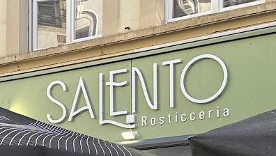
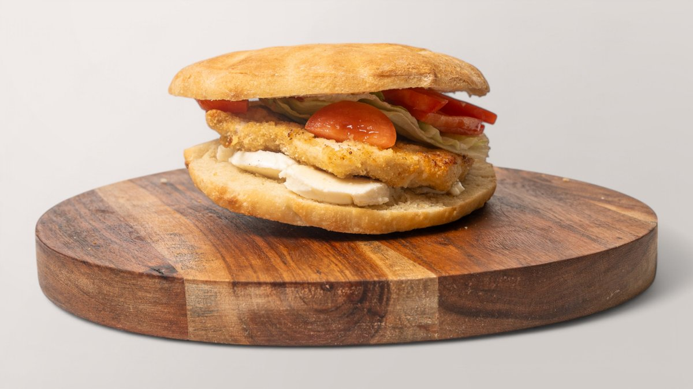
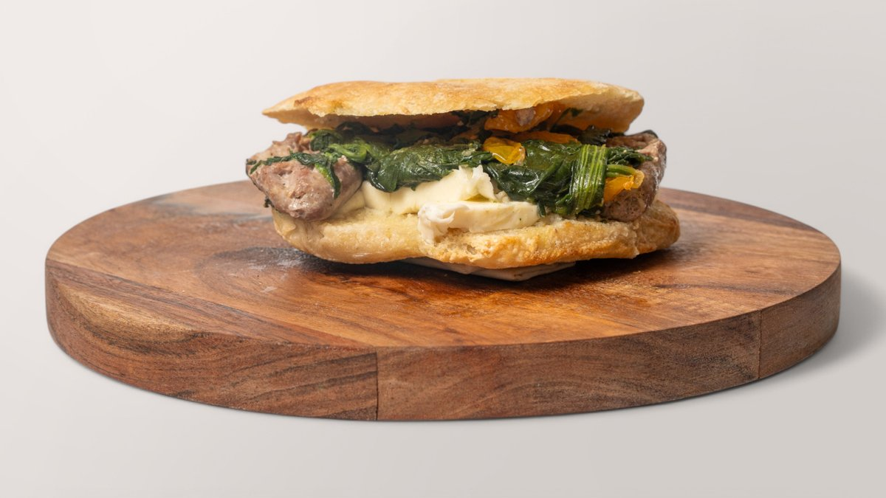
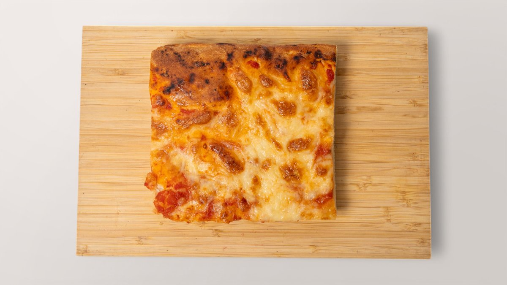
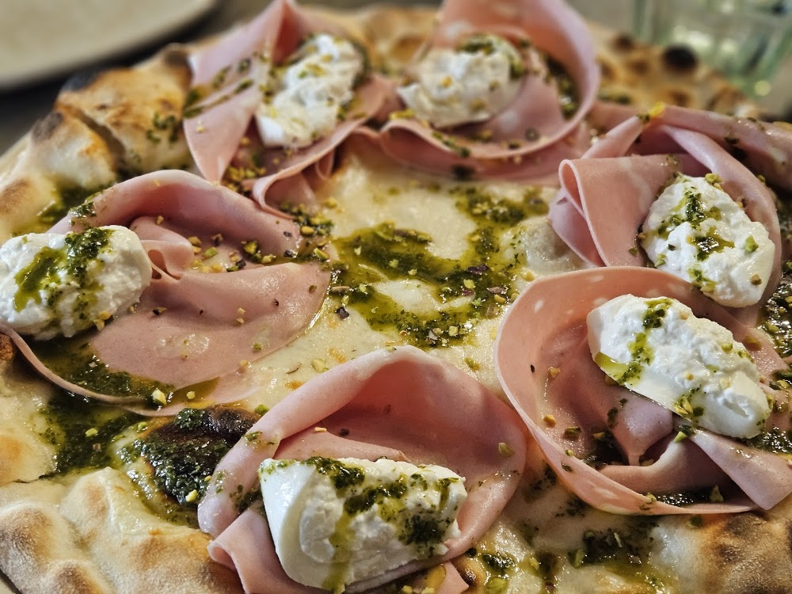
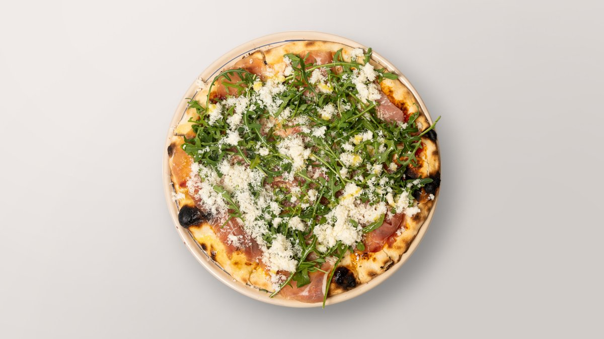
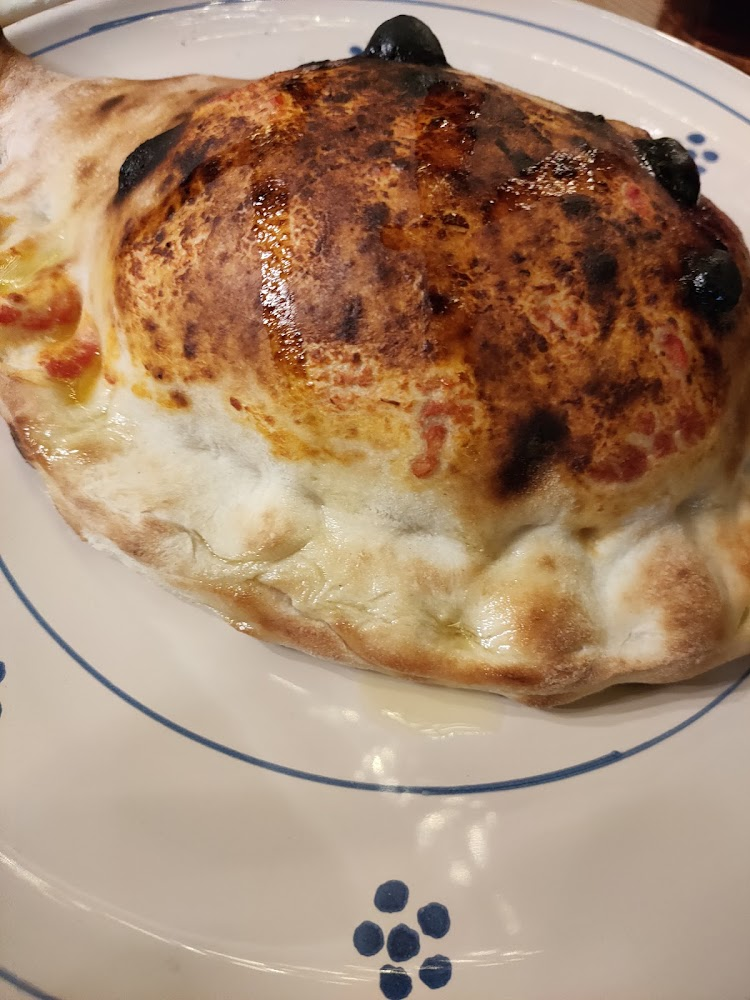

Grand-Rue · Ville Haute
On y passe pour une puccia.On y reste pour la pizza.
Une rosticceria du Salento en plein cœur de la Ville Haute : le comptoir pour manger vite, le four à bois pour manger bien.
5, Grand-Rue · L-1661 LuxembourgUne rosticceria, pas (seulement) une pizzeria.
« Rosticceria » : un comptoir de plats déjà prêts — pucce, focacce, plats du jour — à emporter ou à table, sans attendre le four. Il Salento tient les deux bouts : le comptoir rapide, et le four à bois qui prend le relais le soir pour la pizza.
La maison est tenue par deux frères. Le nom, Salento, désigne la pointe des Pouilles, tout au sud de l'Italie. Une terrasse ombragée s'ouvre sur le Grand-Rue aux beaux jours.
« Il Salento, un morceau d'Italie du Sud en plein Luxembourg : la chaleur du lieu reflète la région qui lui donne son nom, portée par les deux frères qui la tiennent — ils ne se contentent pas de la faire tourner, ils la vivent. »
— d'après les visiteurs, Google Maps



Pucce
Sur l'ensemble des avis Google, la focaccia revient plus souvent qu'aucun autre plat — largement devant le pasticciotto ou le panzarotto.
Focacce
Pasticceria
Prix relevés sur Wolt et Wedely (livraison) — la vente au comptoir peut différer. Carte à confirmer avec la maison.



Généreux, réconfortant, plié à la main : le calzone revient dans les avis comme un incontournable de la carte, au même rang que la Diavola et la Mortadella Burrata e Pistacchio.
— d'après Paperjam et les fiches « plats populaires » de Google MapsPizze al forno a legna
Salades
Plats
Boissons
Le four à bois est servi en soirée. Prix relevés sur les plateformes de livraison — carte, prix et horaires du four à confirmer avec la maison.
5, Grand-Rue — Ville Haute
